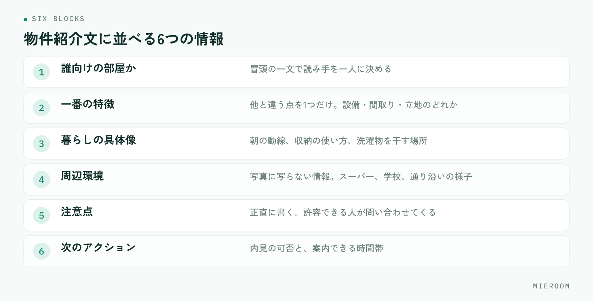

物件紹介文の書き方は、書き出しで読み手を一人に決め、条件を暮らし方の言葉に翻訳して並べるの2点に尽きます。テンプレートのまま使い回している紹介文が反響につながらないのは、文章が下手だからではありません。検索条件の欄にすでに書いてある情報を、もう一度並べているからです。
この記事の結論
紹介文の役割は、条件表の繰り返しではなく条件だけでは分からないことを伝えることです。誰向けの部屋かを冒頭で示し、写真に写らない周辺環境や使い勝手を具体的に書けば、問い合わせの数だけでなく質も変わります。
反響が来ない紹介文に共通すること
掲載文を見比べていくと、反響の少ない紹介文にはいくつか同じ特徴があります。
- 条件欄の繰り返しになっている：「2LDK、駅徒歩8分、バストイレ別」。すでに一覧に出ている情報です
- 主語が物件しかない：設備の名前だけが並び、そこで誰がどう暮らすのかが書かれていません
- 抽象的な形容が多い：「閑静な住宅街」「使いやすい間取り」。どの物件にも当てはまる言葉は、読み飛ばされます
- 全部の物件で同じ文章：テンプレートの地名と数字だけを差し替えた文は、読み手にも伝わります
- 情報の順番が固定されていない：担当者ごとに書き方が違い、比較しづらくなります
紹介文を読む人は、条件で絞り込んだ後の人です。条件は合っている前提で、決め手を探しに来ている。ここに条件を繰り返しても、判断材料が増えません。
情報の並べ方を、店舗で1つに決める
書く内容の順番を決めておくと、担当者が変わっても品質が揃います。上から順に、読み手の関心が移る順です。

- 誰向けの部屋か：冒頭の一文。「一人暮らしを始める学生の方へ」「在宅勤務の時間が長い方へ」
- この部屋の一番の特徴：他と違う点を1つだけ。設備でも、間取りでも、立地でも構いません
- 暮らしの具体像：朝の動線、収納の使い方、洗濯物を干す場所など、生活の場面で書きます
- 周辺環境：写真に写らない情報。スーパー、コンビニ、学校、通り沿いの様子
- 注意点：正直に書きます。後述しますが、これが問い合わせの質を上げます
- 次のアクション：内見の可否、案内できる時間帯
この順に並べると、読む人は上から読むだけで判断材料が揃います。一番の特徴を1つに絞るのが肝心です。3つも4つも押し出すと、印象に残るものがなくなります。
条件を「暮らし方」に翻訳する
紹介文が書けないという相談の多くは、書く材料がないのではなく、条件のままで止まっていることが原因です。条件を暮らしの言葉に置き換えます。
- 「南向き」→「洗濯物が午前中に乾きます。日中は照明をつけずに過ごせる明るさです」
- 「独立洗面台」→「朝の支度が洗面所で完結するので、二人暮らしでも動線が重なりません」
- 「駅徒歩12分」→「駅までは平坦な道です。自転車なら5分ほど、駐輪場は屋根付きです」
- 「角部屋」→「窓が2面あるため、風が通ります。隣室は片側だけです」
翻訳のコツは、その設備があると1日のどこが変わるかを書くことです。設備の名前は条件欄が伝えてくれます。紹介文が伝えるのは、その先にある生活です。
内見に来た人からよく出る質問も、そのまま材料になります。現地で聞かれることは、掲載を見た人が知りたいことと重なります。聞かれた質問を記録しておき、紹介文に先回りして書いておけば、問い合わせの段階が1つ進みます。
短所を書くと、問い合わせの質が上がる
紹介文に不利な情報を書くのをためらう気持ちは分かります。ただ、隠しても内見で必ず分かります。内見で判明する短所は、そこまでの案内時間をすべて無駄にします。
書き方には工夫の余地があります。事実を書いたうえで、それが問題にならない人を示します。「線路沿いのため、日中は電車の音が聞こえます。日中は外出されている方であれば気にならない範囲です」。こう書けば、音を許容できない人は問い合わせず、許容できる人だけが来ます。
問い合わせの件数だけを見ると減ることがあります。しかし内見からの決定率と、1件あたりにかける時間が変わります。件数ではなく、内見から申込までの進み方で判断してください。反響の数え方は反響管理の方法に整理しています。
表示のきまりを外さない
賃貸の広告には、不動産の表示に関する公正競争規約という業界共通のルールがあります。紹介文でも同じく適用されます。外すと掲載が止まるだけでなく、店舗の信用に関わります。
- 徒歩の分数は、道路距離80mを1分として計算します。端数は切り上げます
- 成約済みの物件を掲載し続けない。いわゆるおとり広告にあたります
- 「日本一」「最高」「完全」などの最上級表現や、根拠のない断定は使えません
- 「新築」と書けるのは、建築後1年未満で未入居のものに限られます
- 実際の面積・築年・設備と異なる記載をしない。撮影時期の古い写真も、現況と違えば同じ問題になります
おとり広告は、悪意がなくても起こります。申込が入った物件の掲載を誰がいつ下げるかが決まっていないと、成約済みの部屋が残り続けます。申込のステータスが変わったら掲載を確認する、という手順を業務の側に組み込んでください。
媒体ごとに書き分ける
同じ文章をすべての媒体に流し込むと、それぞれの見え方に合いません。表示される文字数と、読む人の状態が違うからです。
| 掲載先 | 読み手の状態 | 重視すること |
|---|---|---|
| ポータルサイト | 複数物件を比較中 | 冒頭の一文で差を出す。短所も書く |
| 自社サイト | 店舗を選んだうえで見ている | 周辺環境や地域の情報を厚く |
| 業者間サイト | 同業者が条件で判断する | 条件・取引条件を正確に。装飾は不要 |
とくにポータルサイトでは、一覧に表示されるのは先頭の数十文字です。最初の一文に、その部屋の一番の特徴を入れてください。挨拶文や物件名から始めると、一覧では何も伝わりません。どの媒体から反響が来ているかは媒体別ROIの考え方で確かめられます。
書きっぱなしにせず、見直しを回す
紹介文は一度書いて終わりにせず、反応を見て直します。難しい分析は不要です。
- 掲載から2週間、問い合わせが0件の物件を洗い出す
- その物件の紹介文の冒頭一文を読み、誰向けかが書かれているか確かめる
- 同じエリア・同じ条件で反響のある物件の紹介文と見比べる
- 直すのは冒頭の一文と、一番の特徴の2か所だけ。全体を書き直さない
- 直した日付を記録し、2週間後にまた見る
一度に1か所だけ直すのが原則です。まとめて書き換えると、何が効いたのか分からなくなります。この見直しを月に一度の作業として決めておけば、紹介文の質は店舗全体で上がっていきます。
紹介文は何文字くらいが適切ですか？
生成AIに紹介文を書かせてもよいですか？
同じ物件の紹介文を使い回しても問題ありませんか？
まとめ：紹介文は、条件表が伝えられないことを書く
物件紹介文の書き方は、冒頭で読み手を決め、一番の特徴を1つに絞り、条件を暮らし方に翻訳し、短所も正直に書く。この順番です。表示のきまりを守り、媒体ごとに書き分け、反響のない物件だけを月に一度見直す。特別な表現力は要りません。
紹介文の質を保つうえで効いてくるのは、どの媒体のどの物件から反響が来ているかを、店舗で数えられている状態です。数えられていないと、直した効果が分からず、見直しが続きません。
ミエルームは、反響の自動取込から接客・申込・売上までを1つの画面でつなぐ、賃貸仲介向けの業務管理SaaSです。媒体ごとの反響を記録して分析できるため、紹介文を直した結果を数字で追えます。申込の状況と掲載の管理も同じ流れで扱えます。デモアカウントをご用意していますので、いまの運用に合うかどうか、お気軽にご相談ください。